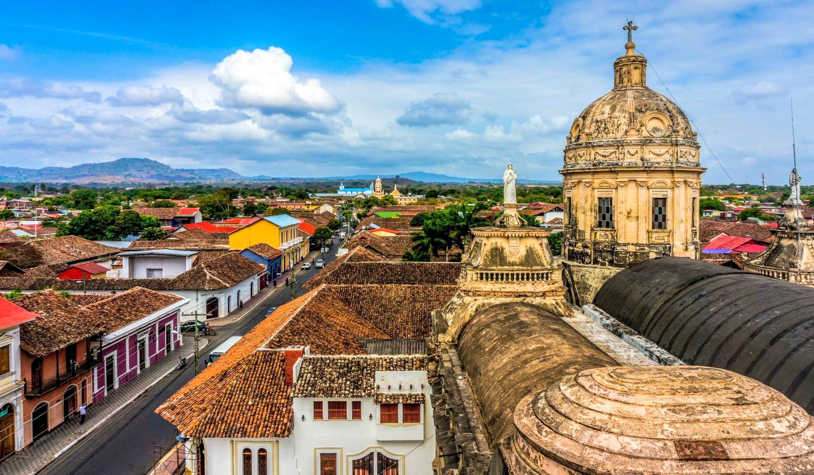
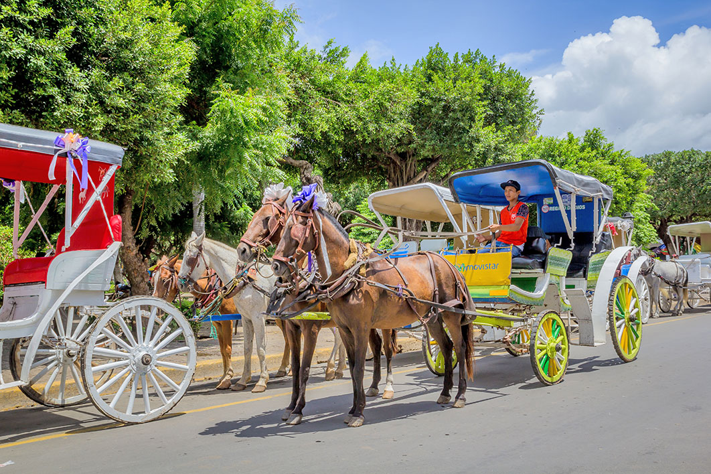

¡Descubriendo las Maravillas de Nicaragua!
Ecoturismo Nicaragua nos deleita con lugares muy hermosos para pasear, disfrutar en familia, y compartir en un ambiente naturalmente sano y cuidado. Cuenta con lugares hermosos para realizar distintas actividades como pesca, hiking, o senderimso.
Nicaragua nos deleita con lugares muy hermosos para pasear, disfrutar en familia, y compartir en un ambiente naturalmente sano y cuidado. Cuenta con lugares hermosos para realizar distintas actividades como pesca, hiking, o senderimso.
|
Turismo de Playa La ciudad de Tola en Rivas, cuenta con una gran cantidad de diversas playas en las que se puede pasar un muy buen Verano. Ideales para disfrutar con tu pareja, tus hijos, o tus amigos.
La ciudad de Tola en Rivas, cuenta con una gran cantidad de diversas playas en las que se puede pasar un muy buen Verano. Ideales para disfrutar con tu pareja, tus hijos, o tus amigos.
|
Ciudades Coloniales Granada, la primera ciudad colonial de Nicaragua y América, hermana de León y una gran fuente de turismo en nuestra nación. Reconocido a nivel nacional por su delicioso Vigorón del parque central. |
Haciendas de CaféEl 95% del café producido en Nicaragua es cultivado en sombra, lo que garantiza una calidad suprema. Nuestro café es exportado e internacionalmente reconocido por su calidad, pureza, y sabor. |
Recorriendo las Ciudades En nuesro país se viven hermosos paseos en Coche, en los cuales disfrutas del ambiente y turismo de Nicaragua. En las distintas ciudades tienes diferentes recorridos or los que puedes optar para conocer nuestro país. |
| Paseos Turísticos: Isla de Ometepe | Un hermoso lugar para pasar en familia, disfrutar de un ambiente fresco, tropical, y rodeado de naturaleza. |
| Paseos Turísticos: Cerro Negro | El mejor lugar para hacer sandboarding con un volcàn activo. Disfruta de una máxima adrenalina y asume el reto de caer desde una cima en llamas. |
| Paseos Turísticos: Zoológico | Un lugar para los peques de casa. Consiente a tu pequeño o pequeña disfrutando de la flora y fauna de Nicaragua. Enseñales a cuidar de los animales y protegerlos. |